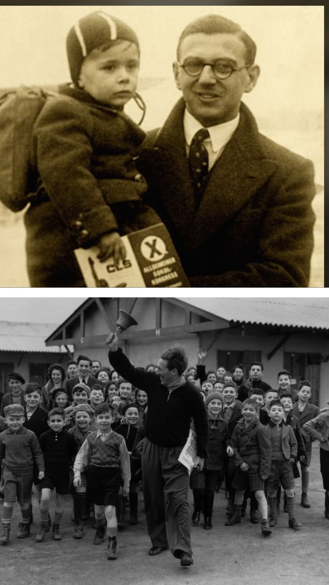
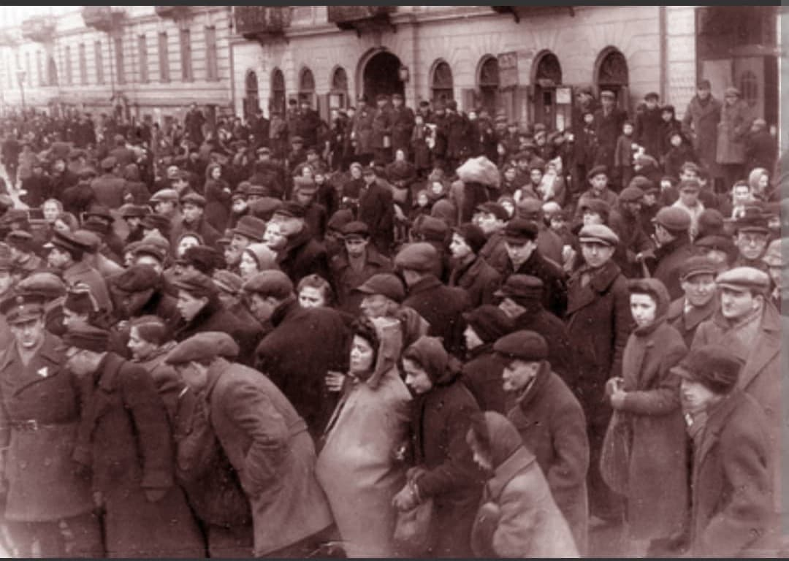
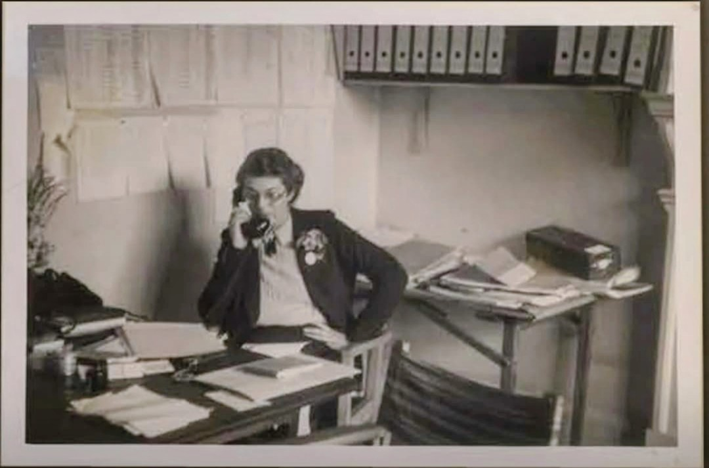
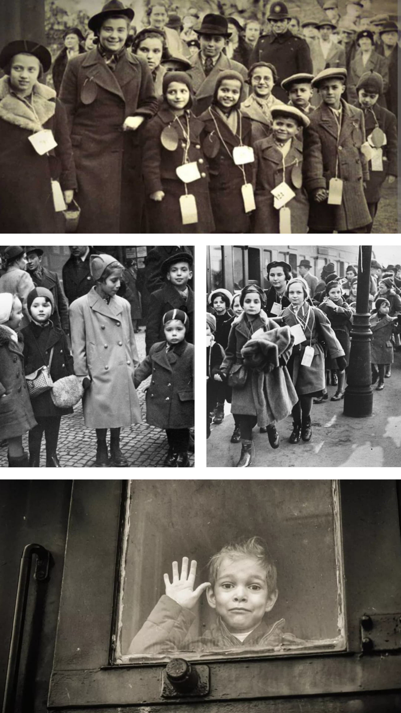
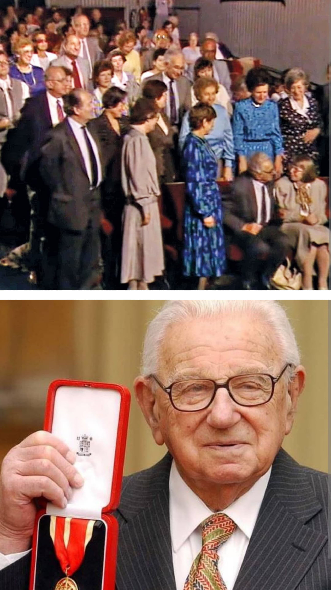

L'histoire complète du Schindler britannique et du sauvetage de 669 enfants (1938–1939)

Surnommé le « Schindler britannique », Sir Nicholas Winton (1909–2015) est un jeune courtier en bourse londonien qui a organisé, à la veille de la Seconde Guerre mondiale, le sauvetage clandestin de 669 enfants — principalement juifs — depuis la Tchécoslovaquie menacée par le régime nazi.
En l'espace de neuf mois, à force de ténacité administrative et logistique, il parvient à affréter des trains à travers le territoire du IIIe Reich pour offrir une terre d'asile à ces enfants au Royaume-Uni. Son héroïsme est resté ignoré du grand public pendant près de cinquante ans.
En septembre 1938, la signature des **Accords de Munich** autorise l'Allemagne nazie à annexer la région des Sudètes. Plus de 150 000 personnes, dont de très nombreuses familles juives, fuient l'occupation pour se réfugier à Prague dans une précarité extrême.

En décembre 1938, Nicholas Winton s'apprête à partir en vacances au ski en Suisse. Son ami Martin Blake, engagé auprès du Comité britannique pour les réfugiés de Tchécoslovaquie, l'appelle d'urgence : « Annule tes vacances, viens immédiatement à Prague. J'ai une tâche essentielle pour toi. »
Sur place, Winton visite les camps de réfugiés et fait un constat alarmant : alors que plusieurs organismes s'efforcent d'aider les adultes, **aucun programme ne prend en charge le sort des enfants**.
Depuis sa chambre du Grand Hotel Europa à Prague, Winton monte une organisation improvisée. Des centaines de parents désespérés font la queue dès l'aube pour inscrire leurs enfants sur ses listes.

De retour à Londres en janvier 1939 pour conserver son emploi, Winton travaille sans relâche le soir et le week-end pour satisfaire aux exigences drastiques du Home Office britannique :

Du 14 mars au 2 août 1939, **8 convois ferroviaires** organisés par Winton et ses collaborateurs sur le terrain (notamment Trevor Chadwick) quittent la gare centrale de Prague (*Praha hlavní nádraží*).
Le trajet était d'une tension extrême : les trains traversaient le cœur de l'Allemagne nazie jusqu'aux Pays-Bas, où les enfants embarquaient sur des ferries vers la Grande-Bretagne avant d'être accueillis en gare de Liverpool Street à Londres.
Le drame du 9ᵉ train : Le plus grand convoi, qui devait transporter 250 enfants, était programmé pour le 1er septembre 1939. Ce jour même, la Wehrmacht envahit la Pologne, déclenchant la Seconde Guerre mondiale. Les frontières sont fermées sur-le-champ. Le train n'a jamais pu partir, et la quasi-totalité de ces 250 enfants ont péri durant la Shoah.
Après 1945, Nicholas Winton ne cherche aucune reconnaissance et n'évoque jamais cette aventure, pas même auprès de sa femme Grete.
En 1988, en nettoyant le grenier familial, Grete découvre un carnet de notes jauni contenant les photos, adresses et noms de tous les enfants sauvés en 1939.

En février 1988, l'émission de la BBC « That's Life! » invite Winton dans son public sans lui dévoiler le programme. En direct, la présentatrice Esther Rantzen demande : « Y a-t-il quelqu'un ce soir dans la salle qui doit sa vie à Nicholas Winton ? ». Tous les spectateurs autour de lui se lèvent : il s'agissait des enfants sauvés, devenus adultes, venus lui rendre hommage à son insu.
Sur les 15 000 enfants juifs vivant en Tchécoslovaquie avant-guerre, moins de 1 000 ont survécu. Les 669 enfants sauvés par Nicholas Winton constituent la majorité des survivants de cette génération. On estime qu'aujourd'hui plus de **6 000 personnes** à travers le monde sont des descendants directs des « enfants de Winton ».
Annobli par la reine Élisabeth II en 2003, Sir Nicholas Winton s'est éteint le 1er juillet 2015 à l'âge de 106 ans, exactement 76 ans jour pour jour après le départ du train qui avait transporté le plus grand nombre d'enfants vers la liberté.
Page du Musée HOP WW2 – Sir Nicholas Winton & Le Kindertransport